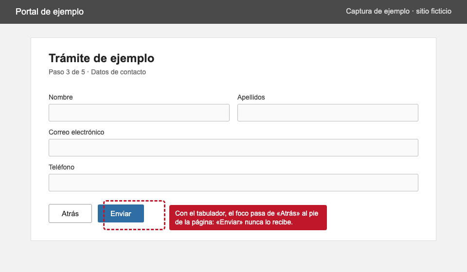

Catálogo · componente 3.4
Hallazgo
Un problema encontrado en una auditoría: qué tan grave es, qué pasa, qué criterios incumple, a qué perfiles afecta y la captura de pantalla que lo prueba.
Un hallazgo
La evidencia está plegada: «Ver la evidencia» la despliega, sin JavaScript. La captura es de un sitio ficticio.
-
Gravedad: Bloqueante
El botón de envío no es alcanzable con teclado.
En el paso 3, el foco salta del botón «Atrás» al pie de la página. Quien navega con teclado o con lector de pantalla no puede enviar el formulario y no puede terminar el trámite.
- Criterios
- 2.1.1 Teclado (explicación en inglés) 2.4.3 Orden del foco (explicación en inglés)
- Perfiles afectados
- Lector de pantalla, solo teclado y motriz
- Dónde
- Paso 3 de 5 · Datos de contacto
Ver la evidencia

Captura del paso 3, tomada con el perfil «solo teclado» el [fecha de ejemplo]. Abrir la captura en tamaño completo.

Una lista de hallazgos
Como van en una ficha de auditoría: del más grave al menos grave. No todos llevan descripción larga ni captura.
-
Gravedad: Bloqueante
El botón de envío no es alcanzable con teclado.
- Criterios
- 2.1.1 Teclado (explicación en inglés)
- Perfiles afectados
- Lector de pantalla, solo teclado y motriz
- Dónde
- Paso 3 de 5
Ver la evidencia
Captura del paso 3, tomada con el perfil «solo teclado» el [fecha de ejemplo]. Abrir la captura en tamaño completo. -
Gravedad: Severa
Los errores del formulario no se anuncian al lector de pantalla.
El mensaje aparece arriba del formulario, en rojo, pero no se anuncia ni recibe el foco.
- Criterios
- 3.3.1 Identificación de errores (explicación en inglés) 4.1.3 Mensajes de estado (explicación en inglés)
- Perfiles afectados
- Lector de pantalla
- Dónde
- Paso 2 de 5
-
Gravedad: Moderada
El texto de ayuda no alcanza el contraste mínimo.
- Criterios
- 1.4.3 Contraste (mínimo) (explicación en inglés)
- Perfiles afectados
- Baja visión
- Dónde
- Pasos 1 a 5
-
Gravedad: Menor
El enlace «aquí» no describe su destino.
- Criterios
- 2.4.4 Propósito de los enlaces (en contexto) (explicación en inglés)
- Perfiles afectados
- Lector de pantalla y cognitivo
- Dónde
- Paso 5 de 5
Casos que rompen
Una descripción larga, tres criterios y los seis perfiles. Conviene verlo a 320 px y con el espaciado forzado.
-
Gravedad: Severa
Al vencer el tiempo de la sesión, el trámite se cancela sin aviso y se pierden todos los datos capturados en los pasos anteriores.
La sesión dura diez minutos y no hay forma de extenderla. No se avisa antes de que venza ni se dice cuánto tiempo queda. Quien usa un lector de pantalla, quien escribe despacio o quien necesita releer las instrucciones tiene que empezar el trámite desde el principio, a veces más de una vez.
- Criterios
- 3.3.1 Identificación de errores (explicación en inglés) 4.1.3 Mensajes de estado (explicación en inglés) 2.1.1 Teclado (explicación en inglés)
- Perfiles afectados
- Lector de pantalla, solo teclado, baja visión, motriz, persona sorda y cognitivo
- Dónde
- Todo el trámite
Ver la evidencia
Captura del paso 3, tomada con el perfil «solo teclado» el [fecha de ejemplo]. Abrir la captura en tamaño completo.